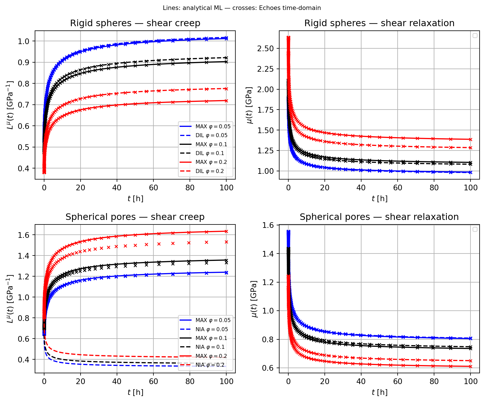
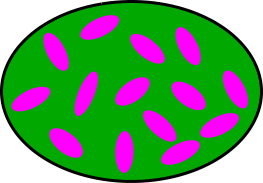
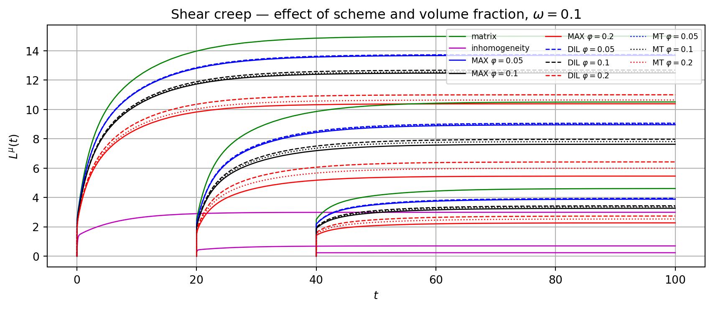
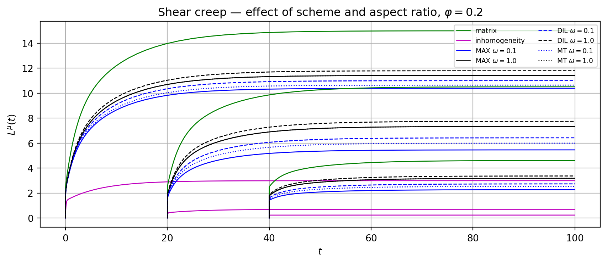

from numpy import *
import matplotlib.pyplot as plt
from echoes import *
from mpmath import mp
import sys
sys.path.insert(0, 'mittag_leffler')
from mittag_leffler import ml as mittag_leffler, I_Rabotnov
mp.dps = 25
set_printoptions(precision=6, suppress=True)17 Time-domain viscoelastic homogenization
Volterra operator formalism
Hereditary law and Volterra operator
A linear causal material stores the full history of loading. Under uniaxial stress, the strain at time \(t\) due to an infinitesimal stress increment \(\ud\sigma(t')\) applied at past time \(t' \le t\) equals \(J(t,t')\,\ud\sigma(t')\). Integrating over all past increments (Stieltjes integral) gives the hereditary law:
\[ \varepsilon(t) = \int_{-\infty}^{t} J(t,t')\,\ud\sigma(t') \]
The compact notation \(\varepsilon = J \circ \sigma\) defines the Volterra operator associated with the kernel \(J(t,t')\). For 4th-order tensor kernels, the contraction over the tensor indices gives the tensor Volterra double contraction:
\[ \boldsymbol{\varepsilon}(t) = \uuuu{J}(t,\bullet) \dcirc \boldsymbol{\sigma}(\bullet) \quad\Longleftrightarrow\quad \varepsilon_{ij}(t) = \int_{-\infty}^{t} J_{ijkl}(t,t')\,\ud\sigma_{kl}(t') \tag{17.1}\]
The dual relaxation form writes \(\boldsymbol{\sigma} = \uuuu{C} \dcirc \boldsymbol{\varepsilon}\), i.e.:
\[ \sigma_{ij}(t) = \int_{-\infty}^{t} C_{ijkl}(t,t')\,\ud\varepsilon_{kl}(t') \tag{17.2}\]
Product of Volterra kernels and inverse
The product of two scalar Volterra kernels \(F\) and \(G\) is defined by:
\[(F \circ G)(t,t') = \int_{-\infty}^{t} F(t,\tau)\,\frac{\partial G}{\partial \tau}(\tau,t')\,\ud\tau\]
This product is associative and distributive over addition, but not commutative. The identity for this product is the Heaviside function \(H(t,t') = H(t-t')\) (step function). The Volterra inverse \(\volt{F}\) of a kernel \(F\) satisfies:
\[ \volt{F} \circ F = F \circ \volt{F} = H \tag{17.3}\]
For 4th-order tensor kernels, the tensor Volterra inverse \(\volt{\uuuu{C}}\) satisfies \(\volt{\uuuu{C}} \dcirc \uuuu{C} = H\,\uuuu{I}\) (where \(\uuuu{I}\) is the 4th-order identity tensor), so that \(\uuuu{J} = \volt{\uuuu{C}}\) is the creep compliance and \(\uuuu{C} = \volt{\uuuu{J}}\) is the relaxation tensor.
Ageing vs. non-ageing
For a non-ageing material, the kernel depends only on the time difference: \(\uuuu{C}(t,t') = \uuuu{C}(t-t')\). The Volterra product reduces to a convolution, and the Laplace-Carson transform \(\tilde{\cal F}(p) = p\int_0^\infty e^{-pt}{\cal F}(t)\,\ud t\) converts the hereditary law into an algebraic relation \(\tilde{\boldsymbol{\sigma}}(p) = \tilde{\uuuu{C}}(p):\tilde{\boldsymbol{\varepsilon}}(p)\). The correspondence principle then extends elastic homogenization results directly (see Chapter 16).
For an ageing material, \(\uuuu{C}(t,t')\) depends on both \(t\) and \(t'\) independently. The convolution structure is broken, the Laplace-Carson approach fails, and a direct time-domain treatment is required. This is the focus of the present chapter.
Numerical discretization
Block matrix representation of Volterra integrals
Over a discrete time series \(t_0 < t_1 < \cdots < t_n\), define the block column vectors of stresses and strains at the discrete times: \[ \boldsymbol{\Sigma} = \bigl(\boldsymbol{\sigma}(t_0),\;\boldsymbol{\sigma}(t_1),\;\ldots,\;\boldsymbol{\sigma}(t_n)\bigr)^T \in \mathbb{R}^{6(n+1)}, \quad \boldsymbol{E} = \bigl(\boldsymbol{\varepsilon}(t_0),\;\boldsymbol{\varepsilon}(t_1),\;\ldots,\;\boldsymbol{\varepsilon}(t_n)\bigr)^T \in \mathbb{R}^{6(n+1)}. \]
The Volterra integral 17.2 is approximated by the discrete constitutive law: \[ \boldsymbol{\Sigma} = \mathbf{R}^r\,\boldsymbol{E} \] where \(\mathbf{R}^r\) is the block relaxation matrix of phase \(r\): a lower-triangular \(6(n+1)\times6(n+1)\) matrix with \(6\times6\) blocks \([\mathbf{R}^r]_{ij}\) (\(0\le j\le i\le n\)). The specific form of the blocks depends on the chosen quadrature rule; the trapezoidal scheme of (Sanahuja, 2013) is detailed in the next section.
Trapezoidal discretization (Sanahuja, 2013)
Starting from 17.2 with zero initial conditions before \(t_0\), integrate by parts and apply the trapezoidal rule on each interval \([t_j, t_{j+1}]\). The blocks of the block relaxation matrix \(\mathbf{R}^r\) are:
\[ [\mathbf{R}^r]_{ik} = \begin{cases} \uuuu{C}^r(t_0,\,t_0) & i=k=0 \\[4pt] \dfrac{1}{2}\bigl[\uuuu{C}^r(t_i,t_{i-1}) + \uuuu{C}^r(t_i,t_i)\bigr] & i=k>0 \\[4pt] \dfrac{1}{2}\bigl[\uuuu{C}^r(t_i,t_0) - \uuuu{C}^r(t_i,t_1)\bigr] & i>0,\;k=0 \\[4pt] \dfrac{1}{2}\bigl[\uuuu{C}^r(t_i,t_{k-1}) - \uuuu{C}^r(t_i,t_{k+1})\bigr] & i>k>0 \end{cases} \tag{17.4}\]
Note that \([\mathbf{R}^r]_{ik}\) is a weighted combination of values of the relaxation kernel \(\uuuu{C}^r\) at neighbouring time points — not simply \(\uuuu{C}^r(t_i, t_k)\). The lower-triangular structure (\([\mathbf{R}^r]_{ik} = 0\) for \(k>i\)) reflects causality: \(\boldsymbol{\sigma}(t_i)\) depends only on \(\boldsymbol{\varepsilon}(t_k)\) for \(k \le i\).
Python implementation
def visco_mat(f, t):
"""Lower-triangular discretization matrix for scalar kernel f(t, t').
Implements Eq. (visco-mat) with zero initial conditions."""
n = len(t)
M = zeros((n, n))
M[0, 0] = f(t[0], t[0])
for i in range(1, n):
M[i, 0] = 0.5 * (f(t[i], t[0]) - f(t[i], t[1]))
M[i, i] = 0.5 * (f(t[i], t[i-1]) + f(t[i], t[i]))
for i in range(2, n):
for j in range(1, i):
M[i, j] = 0.5 * (f(t[i], t[j-1]) - f(t[i], t[j+1]))
return MFor illustration, consider a scalar Maxwell relaxation kernel \(C(t,t') = e^{-(t-t')/\tau}\) with \(\tau=20\):
tau_m = 20.
R_maxwell = lambda t, tp: exp(-(t - tp) / tau_m)
t_small = array([0., 5., 15., 40., 80.])
M = visco_mat(R_maxwell, t_small)
print("Relaxation matrix M (lower triangular):")
print(M)
print("\nCreep matrix M⁻¹:")
print(linalg.inv(M))Relaxation matrix M (lower triangular):
[[ 1. 0. 0. 0. 0. ]
[-0.1106 0.8894 0. 0. 0. ]
[-0.067082 -0.263817 0.803265 0. 0. ]
[-0.019219 -0.075585 -0.413113 0.643252 0. ]
[-0.002601 -0.010229 -0.055909 -0.480613 0.567668]]
Creep matrix M⁻¹:
[[1. 0. 0. 0. 0. ]
[0.124353 1.124353 0. 0. 0. ]
[0.124353 0.369272 1.244919 0. 0. ]
[0.124353 0.369272 0.799518 1.5546 0. ]
[0.124353 0.369272 0.799518 1.316194 1.761594]]The visco_law object in Echoes
The 6×6 block version of 17.4 — where each scalar entry becomes a \(6\times 6\) tensor block — is built by visco_law(func, MODE):
Cs = stiff_Enu(1., 0.2); ks, mus = Cs.kmu
fk = lambda t: 0.5 * exp(-t / 20.) + 0.5 # ageing factor
fmu = lambda t: 0.5 * exp(-t / 20.) + 0.5
Js = lambda t, tp: (fk(tp) / (3*ks) + 0.1/ks * log(1. + (t-tp) / 2.)) * J4 \
+ (fmu(tp) / (2*mus) + 0.1/mus * log(1. + (t-tp) / 1.)) * K4
vl = visco_law(Js, CREEP)The call vl.mat(t) returns the block creep matrix of size \(6(n+1)\times 6(n+1)\); vl.relaxation_mat(t) returns the corresponding block relaxation matrix (Volterra inverse, computed numerically). Let us display the \((1,1)\)-component of each block for a 4-step series:
t3 = array([0., 5., 15., 40.])
M_block = vl.mat(t3)
print("Creep block matrix — (11)-component of each 6×6 block:")
for i in range(4):
row = " ".join(f"{M_block[6*i, 6*j]:8.5f}" for j in range(4))
print(f" t={t3[i]:4.0f}: {row}")Creep block matrix — (11)-component of each 6×6 block:
t= 0: 1.00000 0.00000 0.00000 0.00000
t= 5: 0.23622 1.12562 0.00000 0.00000
t= 15: 0.09572 0.41792 1.05838 0.00000
t= 40: 0.06951 0.18160 0.53508 0.99065The matrix is strictly lower-triangular: \(\boldsymbol{\varepsilon}(t_i)\) depends only on past stresses. The diagonal entries \(J(t_i,t_i)\) decrease with age \(t_i\) (the material stiffens over time).
Symmetry decomposition: visco_paramsym and visco_tensor
For an isotropic material, the relaxation tensor decomposes as \(\uuuu{C}(t,t') = 3k(t,t')\,\uuuu{J} + 2\mu(t,t')\,\uuuu{K}\). At the discrete level the \(6(n+1)\times 6(n+1)\) block matrix inherits this structure: its information is entirely captured by independent scalar \((n+1)\times(n+1)\) parameter blocks, one per independent modulus of the material symmetry class.
visco_paramsym extracts these blocks from a block matrix:
params = visco_paramsym(array, sym, theta=0., phi=0., psi=0., unitsize=6)
# array : block relaxation/creep matrix, size 6(n+1)×6(n+1)
# sym : material symmetry — ISO, TI, ORTHO, ANISO
# theta,phi,psi: Euler rotation angles of the symmetry axes (default 0)
# unitsize : size of each tensor block (default 6)
# returns : list of (n+1)×(n+1) sub-matrices
# ISO → [Vk, Vmu] (bulk, shear)
# TI → [Vl, Vm, Vn, Vp, Vq] (5 moduli)
# ORTHO → [V11,V22,V33,V44,V55,V66,V12,V13,V23]
# ANISO → 21 componentsvisco_tensor reconstructs the full block matrix from the parameter blocks (inverse of visco_paramsym):
array = visco_tensor(params, angles=[])
# params : list of (n+1)×(n+1) sub-matrices
# angles : rotation angles matching those used in visco_paramsym
# returns: block matrix of size 6(n+1)×6(n+1)Continuing the previous example (vl, t3):
M_relax = vl.relaxation_mat(t3)
Vk, Vmu = visco_paramsym(M_relax, ISO) # bulk and shear (n+1)×(n+1) blocks
print("Bulk relaxation block Vk [k(ti, tj)]:")
print(Vk)
print("\nShear relaxation block Vmu [mu(ti, tj)]:")
print(Vmu)Bulk relaxation block Vk [k(ti, tj)]:
[[ 1.666667 0. 0. 0. ]
[-0.357895 1.471521 0. 0. ]
[-0.015853 -0.616222 1.54099 0. ]
[-0.041673 0.074063 -0.884876 1.598983]]
Shear relaxation block Vmu [mu(ti, tj)]:
[[ 0.833333 0. 0. 0. ]
[-0.173859 0.741481 0. 0. ]
[-0.005862 -0.288234 0.791704 0. ]
[-0.023549 0.018488 -0.420428 0.85231 ]]The \((i,j)\) entry of Vk (resp. Vmu) is the bulk (resp. shear) relaxation modulus \(k(t_i,t_j)\) (resp. \(\mu(t_i,t_j)\)). The lower-triangular structure reflects causality. Reconstruction with visco_tensor is exact:
M_check = visco_tensor([Vk, Vmu], [])
print("Max reconstruction error:", abs(M_relax - M_check).max())Max reconstruction error: 2.220446049250313e-16ALV Eshelby problem and Hill tensor kernel
Problem statement
Consider an ellipsoidal inclusion \(\mathcal{E}\) (shape tensor \(\uu{A}\)) embedded in an infinite ALV matrix with relaxation kernel \(\uuuu{C}^0(t,t')\). The inclusion has relaxation kernel \(\uuuu{C}^\mathcal{E}(t,t')\). Under remote strain loading \(\uu{E}(t)\), the strain and stress fields inside \(\mathcal{E}\) remain uniform — a key result that extends the Eshelby theorem to ALV (Barthélémy et al., 2016).
ALV Hill tensor kernel
The strain inside the inclusion due to a uniform eigenstress (polarization) \(\uu{p}(t)\) in \(\mathcal{E}\) is given by the ALV Hill tensor kernel \(\uuuu{P}_\mathcal{E}(t,t')\):
\[ \boldsymbol{\varepsilon}_{|\mathcal{E}}(t) = -\uuuu{P}_\mathcal{E}(t,\bullet) \dcirc \uu{p}(\bullet) \]
The formula for \(\uuuu{P}_\mathcal{E}(t,t')\) and its derivation are given in Appendix C (C.1).
Isotropic matrix case
When the matrix is isotropic, \(\uuuu{C}^0(t,t') = 3k^0(t,t')\,\mathbb{J} + 2\mu^0(t,t')\,\mathbb{K}\), the ALV Hill tensor kernel decouples (see Appendix C):
\[ \uuuu{P}_\mathcal{E}(t,t') = \volt{\!\left(k^0 + \tfrac{4}{3}\mu^0\right)}_{(t,t')}\,\uuuu{U}^{\uu{A}} + \volt{\mu^0}_{(t,t')}\,\bigl(\uuuu{V}^{\uu{A}} - \uuuu{U}^{\uu{A}}\bigr) \tag{17.5}\]
where \(\uuuu{U}^{\uu{A}}\) and \(\uuuu{V}^{\uu{A}}\) are the purely geometric tensors defined in Appendix B. For a sphere, the kernel reduces to C.3. For general spheroids, the formulas for \(\uuuu{U}^{\uu{A}}\) and \(\uuuu{V}^{\uu{A}}\) involve elliptic integrals of the aspect ratio (Barthélémy et al., 2019, Appendix A).
Strain concentration and contribution tensors
For an inclusion \(\mathcal{E}\) with stiffness kernel \(\uuuu{C}^\mathcal{E}\) in a reference medium with kernel \(\uuuu{C}^0\), the dilute strain concentration tensor (ALV counterpart of \(\uuuu{A}^{dil}\) in Chapter 7) satisfies:
\[ \boldsymbol{\varepsilon}_{|\mathcal{E}} = \uuuu{A}^{dil} \dcirc \uu{E}, \qquad \uuuu{A}^{dil} = \volt{\!\bigl(H\,\uuuu{I} + \uuuu{P}_\mathcal{E} \dcirc (\uuuu{C}^\mathcal{E} - \uuuu{C}^0)\bigr)} \tag{17.6}\]
In block matrix form: \(\mathbf{A}^{dil} = \bigl[\mathbf{I} + \mathbf{P}_\mathcal{E}(\mathbf{R}^0)\cdot(\mathbf{R}^\mathcal{E} - \mathbf{R}^0)\bigr]^{-1}\).
The strain contribution tensor (ALV counterpart of \(\delta\uuuu{C}:\uuuu{A}^{dil}\) in Chapter 12) is:
\[ \uuuu{N}^{dil} = (\uuuu{C}^\mathcal{E} - \uuuu{C}^0) \dcirc \uuuu{A}^{dil} = \volt{\!\bigl(\uuuu{P}_\mathcal{E} + \volt{(\uuuu{C}^\mathcal{E} - \uuuu{C}^0)}\bigr)} \tag{17.7}\]
These Volterra-kernel expressions are the exact analogues of the elastic concentration and contribution tensors with matrix inverses replaced by Volterra inverses.
Echoes commands for ALV homogenization
RVE setup
Phases are defined with a visco_prop argument providing the creep or relaxation kernel as a function of two time arguments:
ver = rve(matrix="SOLID")
ver["SOLID"] = ellipsoid(shape=spherical, symmetrize=[ISO],
prop={"C": Cs},
visco_prop={"C": (Js, CREEP)})
ver["INCL"] = ellipsoid(shape=spheroidal(omega), symmetrize=[ISO],
prop={"C": Ci},
visco_prop={"C": (Ji, CREEP)},
fraction=f)The reference medium relaxation matrix is set on the RVE:
ver.set_visco_mat("C", visco_law(Js, CREEP).relaxation_mat(T))where T is the time discretization array. This builds the block relaxation matrix \(\mathbf{R}^0\) for the reference medium.
Time-domain homogenization
V = homogenize_visco(prop="C", rve=ver, time_series=T,
scheme=MT, # or SC, DIFF, DIL, MAX
epsrel=1.e-6, maxnb=100)The output V is the effective block relaxation matrix of size \(6(n+1)\times 6(n+1)\). Its inverse gives the effective creep matrix; the uniaxial creep compliance for loading at \(t_0\) is: \[J^{hom}(t_i,t_0) = [\mathbf{V}^{-1}]_{6i,\,0}\]
Other inclusion types
For cracks (penny-shaped inclusions) and n-layer spheres (coated inclusions), the same homogenize_visco interface applies; see Chapter 9 and Chapter 8 for the respective Echoes commands.
For cracks, the viscoelastic compliance is obtained by taking the limit of a flat spheroid, analogously to the elastic case. The viscoelastic kernel is supplied via visco_prop:
ver["CRK"] = crack(shape=penny_shaped(omega), density=rho,
visco_prop={"C": (Jc, CREEP)})For n-layer spheres, the computation does not rely on a Hill tensor. Instead, it extends the elastic result of (Hervé and Zaoui, 1993) to the ageing linear viscoelastic setting using the block structure of the Volterra operators, with possible viscoelastic interfaces generalising the elastic imperfect-interface framework of (Hervé-Luanco, 2014). Kernels are supplied layer-by-layer (list of (func, type) tuples) for visco_prop, and interface-by-interface for interf_visco_prop:
ver["SPH"] = sphere_nlayers(nb_layers=2, radius=R, fraction=f,
visco_prop={"C": [(J1, CREEP), (J2, CREEP)]},
interf_visco_prop={"C": [(Ki, CREEP)]})Homogenization schemes
For a matrix composite with matrix stiffness kernel \(\uuuu{C}^0\) and inclusion sets \(r\) (volume fractions \(\varphi_r\), stiffness kernels \(\uuuu{C}^r\)), the general formula for the effective stiffness kernel is:
\[ \uuuu{C}^{hom} = \uuuu{C}^0 + \sum_r \varphi_r\,(\uuuu{C}^r - \uuuu{C}^0) \dcirc \langle\uuuu{A}^r\rangle \]
Different schemes correspond to different choices of how \(\langle\uuuu{A}^r\rangle\) is estimated.
Maxwell scheme
The Maxwell (or Ponte Castañeda-Willis) scheme equates the far-field disturbance of all inclusions to that of an equivalent homogeneous particle of shape \(\Omega\) (distribution shape):
\[ \volt{\uuuu{C}^{MX}} = \volt{\uuuu{C}^0} + \volt{\!\left(\volt{\!\left(\sum_r \varphi_r\,\uuuu{N}^r\right)} - \uuuu{P}_\Omega\right)} \tag{17.8}\]
In block matrix form: \((\mathbf{R}^{MX})^{-1} = (\mathbf{R}^0)^{-1} + \bigl[(\sum_r\varphi_r\mathbf{N}^r)^{-1} - \mathbf{P}_\Omega\bigr]^{-1}\). This scheme is equivalent to the elastic PCW scheme and provides a rigorous bound structure (Barthélémy et al., 2019).
Dilute scheme (DIL)
The dilute (DIL) scheme — also known as the non-interaction approximation (NIA, (Barthélémy et al., 2019)) in its creep compliance form — treats each inclusion independently in the matrix:
\[ \uuuu{C}^{DIL} = \uuuu{C}^0 + \sum_r \varphi_r\,\uuuu{N}^r \tag{17.9}\]
This is the first-order estimate, valid for small volume fractions.
Mori-Tanaka (MT) scheme
The MT scheme estimates the strain concentration using auxiliary Eshelby problems where the remote strain equals the matrix average \(\langle\boldsymbol{\varepsilon}\rangle_{matrix}\), combined with the consistency rule \(\uu{E}(t) = \langle\boldsymbol{\varepsilon}(t)\rangle\). This gives (Barthélémy et al., 2019):
\[ \uuuu{C}^{MT} = \uuuu{C}^0 + \sum_r \varphi_r\,\uuuu{N}^r \dcirc \volt{\!\left((1-\textstyle\sum_s\varphi_s)\,H\,\uuuu{I} + \sum_s \varphi_s\,\uuuu{A}^{dil,s}\right)} \tag{17.10}\]
When all inclusions have the same shape (single set), the MT scheme reduces to the standard Mori-Tanaka scheme with matrix as reference:
\[ \mathbf{R}^{MT} = \Bigl(\sum_r f_r\,\mathbf{R}^r\cdot\mathbf{A}^r_{MT}\Bigr)\cdot\Bigl(\sum_r f_r\,\mathbf{A}^r_{MT}\Bigr)^{-1} \tag{17.11}\]
where \(\mathbf{A}^r_{MT} = \bigl[\mathbf{I} + \mathbf{P}_{\mathcal{E}^r}(\mathbf{R}^m)\cdot(\mathbf{R}^r - \mathbf{R}^m)\bigr]^{-1}\) and the reference is the matrix block stiffness \(\mathbf{R}^m\).
Self-consistent scheme and differential scheme
In the self-consistent (SC) scheme the reference medium is the unknown effective medium: \(\mathbf{R}^0 = \mathbf{R}^{SC}\), solved iteratively. The differential (DIFF) scheme builds the effective medium by progressively introducing inclusions in infinitesimal increments. Both are available in Echoes via the scheme argument.
Validation: non-ageing PMMA composite
For a non-ageing PMMA matrix the Rabotnov class is stable under homogenization: the effective shear modulus under the MAX and DIL schemes is again of Rabotnov type with analytically computable parameters (Barthélémy et al., 2016; Sevostianov et al., 2015). These closed-form expressions validate the ALV time-domain algorithm for both rigid inclusions and spherical pores. The matrix shear modulus follows the fraction-exponential (Rabotnov) law
\[ \mu(t) = \mu^0\!\left(1 + \lambda\,I_\alpha(\beta,t)\right), \qquad I_\alpha(\beta,t) = \frac{1}{\beta}\!\left(1 - E_{1+\alpha}(-\beta\,t^{1+\alpha})\right) \tag{17.12}\]
where \(E_a\) is the one-parameter Mittag-Leffler function, defined by the entire series
\[ E_a(z) = \sum_{k=0}^{\infty}\frac{z^k}{\Gamma(ak+1)}, \qquad a>0, \tag{17.13}\]
which generalizes the exponential (\(E_1(z)=e^z\)). The function \(I_\alpha(\beta,t)\) in 17.12 is the primitive of the Rabotnov function \(\mathfrak{R}_\alpha\):
\[ \mathfrak{R}_\alpha(\beta,t) = t^{\alpha}\,E_{1+\alpha,\,1+\alpha}\!\left(-\beta\,t^{1+\alpha}\right), \qquad I_\alpha(\beta,t) = \int_0^t \mathfrak{R}_\alpha(\beta,s)\,\ud s = \frac{1}{\beta}\!\left(1 - E_{1+\alpha}\!\left(-\beta\,t^{1+\alpha}\right)\right), \tag{17.14}\]
where \(E_{a,b}(z)=\sum_{k=0}^\infty z^k/\Gamma(ak+b)\) is the two-parameter Mittag-Leffler function. For \(\alpha\in(-1,0)\) and \(\beta,\lambda>0\) the relaxation modulus \(\mu(t)\) decreases monotonically from \(\mu^0\) toward the long-time value \(\mu^0(1+\lambda/\beta)\), with the Rabotnov exponent \(\alpha\) controlling the rate. The evaluation of \(E_a\) relies on the mittag-leffler package (Hinsen, 2025).
The bulk modulus is elastic (\(k=k^0\), constant). The LC transform of 17.12 is:
\[ \tilde{\mu}(p) = \mu^0\!\left(1 + \frac{\lambda}{p^{1+\alpha} + \beta}\right) \tag{17.15}\]
Parameters (Barthélémy et al., 2016): \(k^0=5.97\) GPa, \(\mu^0=1.7\) GPa, \(\alpha=-0.46\), \(\beta=0.98\) h\(^{-(1+\alpha)}\), \(\lambda=-0.495\) h\(^{-(1+\alpha)}\). Rigid inclusions: \(C_i=10^6\,\mathbb{C}(k^0,\mu^0)\); spherical pores: \(C_i=10^{-10}\,\mathbb{C}(k^0,\mu^0)\).
k0, mu0 = 5.97, 1.7
alpha0, beta0, lambda0 = -0.46, 0.98, -0.495
Cmat = lambda t, tp: 3*k0*J4 + 2*mu0*(1 + lambda0*I_Rabotnov(t-tp, alpha0, beta0))*K4
Cinc = 1.e6 * stiff_kmu(k0, mu0) # rigid spheres
Cpor = 1.e-10 * stiff_kmu(k0, mu0) # spherical pores
def Chom_rig(T, sch, f):
ver = rve(matrix="MAT")
ver["MAT"] = ellipsoid(shape=spherical, symmetrize=[ISO],
visco_prop={"C": (Cmat, RELAXATION)}, fraction=1-f)
ver["INC"] = ellipsoid(shape=spherical, symmetrize=[ISO],
prop={"C": Cinc}, fraction=f)
V = homogenize_visco(prop="C", rve=ver, time_series=T,
scheme=sch, epsrel=1.e-6, maxnb=100, verbose=False)
_, Vmu = visco_paramsym(V, ISO)
return Vmu # relaxation matrix
def Chom_por(T, sch, f):
ver = rve(matrix="MAT")
ver["MAT"] = ellipsoid(shape=spherical, symmetrize=[ISO],
visco_prop={"C": (Cmat, RELAXATION)}, fraction=1-f)
ver["INC"] = ellipsoid(shape=spherical, symmetrize=[ISO],
prop={"C": Cpor}, fraction=f)
V = homogenize_visco(prop="C", rve=ver, time_series=T,
scheme=sch, epsrel=1.e-6, maxnb=100, verbose=False)
_, Vmu = visco_paramsym(V, ISO)
return Vmu # relaxation matrixClosed-form Mittag-Leffler solutions (rigid spheres and pores)
def Lmu_sph_rig_ML_DIL(t, f):
mu0d = mu0*(1 + 5*f/6*(3*k0+4*mu0)/(k0+2*mu0))
a0mu = lambda0*mu0*(3+5*f)/(3*mu0d)
a1mu = 5*f/(2*(3+5*f))*(k0/(k0+2*mu0))**2*a0mu
beta1 = beta0 + 2*lambda0*mu0/(k0+2*mu0)
B = beta0+a0mu+beta1+a1mu; C = a0mu*beta1+a1mu*beta0+beta0*beta1
sqD = sqrt(B**2-4*C); beta3 = (B-sqD)/2; beta4 = (B+sqD)/2
a3mu = (beta0-beta3)*(beta3-beta1)/(beta3-beta4)
a4mu = (beta0-beta4)*(beta4-beta1)/(beta4-beta3)
return 1./mu0d*(1 + a3mu*I_Rabotnov(t,alpha0,beta3) + a4mu*I_Rabotnov(t,alpha0,beta4))
def mu_sph_rig_ML_DIL(t, f):
mu0d = mu0*(1 + 5*f/6*(3*k0+4*mu0)/(k0+2*mu0))
a0mu = lambda0*mu0*(3+5*f)/(3*mu0d)
a1mu = 5*f/(2*(3+5*f))*(k0/(k0+2*mu0))**2*a0mu
beta1 = beta0 + 2*lambda0*mu0/(k0+2*mu0)
return mu0d*(1 + a0mu*I_Rabotnov(t,alpha0,beta0) + a1mu*I_Rabotnov(t,alpha0,beta1))
def Lmu_sph_rig_ML_MAX(t, f):
mu0MX = mu0*(6*(k0+2*mu0)+f*(9*k0+8*mu0))/(6*(1-f)*(k0+2*mu0))
b0mu = 2*(k0+2*mu0)*(3+2*f)*lambda0/(6*(k0+2*mu0)+f*(9*k0+8*mu0))
b1mu = 5*f*k0**2*lambda0/(6*(k0+2*mu0)+f*(9*k0+8*mu0))/(k0+2*mu0)
beta1 = beta0 + 2*lambda0*mu0/(k0+2*mu0)
B = beta0+b0mu+beta1+b1mu; C = b0mu*beta1+b1mu*beta0+beta0*beta1
sqD = sqrt(B**2-4*C); delta3 = (B-sqD)/2; delta4 = (B+sqD)/2
b3mu = (beta0-delta3)*(delta3-beta1)/(delta3-delta4)
b4mu = (beta0-delta4)*(delta4-beta1)/(delta4-delta3)
return 1./mu0MX*(1 + b3mu*I_Rabotnov(t,alpha0,delta3) + b4mu*I_Rabotnov(t,alpha0,delta4))
def mu_sph_rig_ML_MAX(t, f):
mu0MX = mu0*(6*(k0+2*mu0)+f*(9*k0+8*mu0))/(6*(1-f)*(k0+2*mu0))
b0mu = 2*(k0+2*mu0)*(3+2*f)*lambda0/(6*(k0+2*mu0)+f*(9*k0+8*mu0))
b1mu = 5*f*k0**2*lambda0/(6*(k0+2*mu0)+f*(9*k0+8*mu0))/(k0+2*mu0)
beta1 = beta0 + 2*lambda0*mu0/(k0+2*mu0)
return mu0MX*(1 + b0mu*I_Rabotnov(t,alpha0,beta0) + b1mu*I_Rabotnov(t,alpha0,beta1))
def Lmu_sph_por_ML_NIA(t, f):
mu0NIA = mu0*(9*k0+8*mu0)/(9*k0+8*mu0+5*f*(3*k0+4*mu0))
c0mu = -lambda0*(3+5*f)*(9*k0+8*mu0)/(3.*(9*k0+8*mu0+5*f*(3*k0+4*mu0)))
c1mu = -160*f*mu0**2*lambda0/(3.*(9*k0+8*mu0)*(9*k0+8*mu0+5*f*(3*k0+4*mu0)))
zeta0 = beta0+lambda0; zeta1 = beta0+8*mu0*lambda0/(9*k0+8*mu0)
B = zeta0+c0mu+zeta1+c1mu; C = c0mu*zeta1+c1mu*zeta0+zeta0*zeta1
sqD = sqrt(B**2-4*C); zeta3 = (B-sqD)/2; zeta4 = (B+sqD)/2
c3mu = (zeta0-zeta3)*(zeta3-zeta1)/(zeta3-zeta4)
c4mu = (zeta0-zeta4)*(zeta4-zeta1)/(zeta4-zeta3)
return 1./mu0NIA*(1 + c3mu*I_Rabotnov(t,alpha0,zeta3) + c4mu*I_Rabotnov(t,alpha0,zeta4))
def mu_sph_por_ML_NIA(t, f):
mu0NIA = mu0*(9*k0+8*mu0)/(9*k0+8*mu0+5*f*(3*k0+4*mu0))
c0mu = -lambda0*(3+5*f)*(9*k0+8*mu0)/(3.*(9*k0+8*mu0+5*f*(3*k0+4*mu0)))
c1mu = -160*f*mu0**2*lambda0/(3.*(9*k0+8*mu0)*(9*k0+8*mu0+5*f*(3*k0+4*mu0)))
zeta0 = beta0+lambda0; zeta1 = beta0+8*mu0*lambda0/(9*k0+8*mu0)
B = zeta0+c0mu+zeta1+c1mu; C = c0mu*zeta1+c1mu*zeta0+zeta0*zeta1
sqD = sqrt(B**2-4*C); zeta3 = (B-sqD)/2; zeta4 = (B+sqD)/2
c3mu = (zeta0-zeta3)*(zeta3-zeta1)/(zeta3-zeta4)
c4mu = (zeta0-zeta4)*(zeta4-zeta1)/(zeta4-zeta3)
return mu0NIA*(1 + c3mu*I_Rabotnov(t,alpha0,zeta3) + c4mu*I_Rabotnov(t,alpha0,zeta4))
def Lmu_sph_por_ML_MAX(t, f):
mu0MX = mu0*(1-f)*(9*k0+8*mu0)/(9*k0+8*mu0+6*f*(k0+2*mu0))
d0mu = -lambda0*(3+2*f)*(9*k0+8*mu0)/(3.*(9*k0+8*mu0+6*f*(k0+2*mu0)))
d1mu = -160*f*mu0**2*lambda0/(3.*(9*k0+8*mu0)*(9*k0+8*mu0+6*f*(k0+2*mu0)))
eta0 = beta0+lambda0; eta1 = beta0+8*mu0*lambda0/(9*k0+8*mu0)
return 1./mu0MX*(1 + d0mu*I_Rabotnov(t,alpha0,eta0) + d1mu*I_Rabotnov(t,alpha0,eta1))
def mu_sph_por_ML_MAX(t, f):
mu0MX = mu0*(1-f)*(9*k0+8*mu0)/(9*k0+8*mu0+6*f*(k0+2*mu0))
d0mu = -lambda0*(3+2*f)*(9*k0+8*mu0)/(3.*(9*k0+8*mu0+6*f*(k0+2*mu0)))
d1mu = -160*f*mu0**2*lambda0/(3.*(9*k0+8*mu0)*(9*k0+8*mu0+6*f*(k0+2*mu0)))
eta0 = beta0+lambda0; eta1 = beta0+8*mu0*lambda0/(9*k0+8*mu0)
B = eta0+d0mu+eta1+d1mu; C = d0mu*eta1+d1mu*eta0+eta0*eta1
sqD = sqrt(B**2-4*C); eta3 = (B-sqD)/2; eta4 = (B+sqD)/2
d3mu = (eta0-eta3)*(eta3-eta1)/(eta3-eta4)
d4mu = (eta0-eta4)*(eta4-eta1)/(eta4-eta3)
return mu0MX*(1 + d3mu*I_Rabotnov(t,alpha0,eta3) + d4mu*I_Rabotnov(t,alpha0,eta4))n_val = 200
T = array([0.] + logspace(-8., log10(100.), n_val).tolist())
fracs = [0.05, 0.1, 0.2]; clrs = ['b', 'k', 'r']
fig, axes = plt.subplots(2, 2, figsize=(9, 7.5))
(ax_Lr, ax_mr), (ax_Lp, ax_mp) = axes
for f, c in zip(fracs, clrs):
lbl = rf'$\varphi={f}$'
# Rigid spheres: Echoes (crosses) — MAX and DIL
for sch in [MAX, DIL]:
Vmu = Chom_rig(T, sch, f)
ax_Lr.plot(T, linalg.inv(Vmu).dot(ones(len(T)))*2., c+'x', ms=4)
ax_mr.plot(T, Vmu.dot(ones(len(T)))/2., c+'x', ms=4)
# Rigid spheres: analytical ML (lines)
ax_Lr.plot(T, [Lmu_sph_rig_ML_MAX(t,f) for t in T], c+'-', lw=1.5, label=rf'MAX {lbl}')
ax_Lr.plot(T, [Lmu_sph_rig_ML_DIL(t,f) for t in T], c+'--', lw=1.5, label=rf'DIL {lbl}')
ax_mr.plot(T, [mu_sph_rig_ML_MAX(t,f) for t in T], c+'-', lw=1.5)
ax_mr.plot(T, [mu_sph_rig_ML_DIL(t,f) for t in T], c+'--', lw=1.5)
# Spherical pores: Echoes (crosses) — MAX and DILD
for sch in [MAX, DILD]:
Vmu = Chom_por(T, sch, f)
ax_Lp.plot(T, linalg.inv(Vmu).dot(ones(len(T)))*2., c+'x', ms=4)
ax_mp.plot(T, Vmu.dot(ones(len(T)))/2., c+'x', ms=4)
# Spherical pores: analytical ML (lines)
ax_Lp.plot(T, [Lmu_sph_por_ML_MAX(t,f) for t in T], c+'-', lw=1.5, label=rf'MAX {lbl}')
ax_Lp.plot(T, [Lmu_sph_por_ML_NIA(t,f) for t in T], c+'--', lw=1.5, label=rf'NIA {lbl}')
ax_mp.plot(T, [mu_sph_por_ML_MAX(t,f) for t in T], c+'-', lw=1.5)
ax_mp.plot(T, [mu_sph_por_ML_NIA(t,f) for t in T], c+'--', lw=1.5)
for ax, ttl, ylbl in [
(ax_Lr, 'Rigid spheres — shear creep', r'$L^\mu(t)$ [GPa$^{-1}$]'),
(ax_mr, 'Rigid spheres — shear relaxation', r'$\mu(t)$ [GPa]'),
(ax_Lp, 'Spherical pores — shear creep', r'$L^\mu(t)$ [GPa$^{-1}$]'),
(ax_mp, 'Spherical pores — shear relaxation', r'$\mu(t)$ [GPa]')]:
ax.set_xlabel(r'$t$ [h]'); ax.set_ylabel(ylbl); ax.set_title(ttl)
ax.grid(True); ax.legend(fontsize=7)
plt.suptitle('Lines: analytical ML — crosses: Echoes time-domain', fontsize=8)
plt.tight_layout(); plt.show()
Crosses (Echoes time-domain) coincide with the lines (closed-form ML solutions), confirming that the ALV algorithm correctly reproduces the Rabotnov homogenization formulas for both rigid inclusions and porous media.
Application: Granger ageing creep law
We apply the framework to an ageing matrix–inclusion composite with the creep law of (Barthélémy et al., 2019), adapted from the Granger model. Both phases obey a compliance of the form
\[ \uuuu{J}(t,t') = \left(\frac{1}{E} + f_a(t')\sum_{i=1}^{2}s_i\!\left(1-e^{-(t-t')/\tau_i}\right)\right)\mathbb{T}_\nu, \quad \mathbb{T}_\nu = (1-2\nu)\,\mathbb{J} + (1+\nu)\,\mathbb{K}, \quad f_a(t')=e^{-(t'/\tau_a)^2} \tag{17.16}\]
The ageing factor \(f_a(t')\) decreases with loading age \(t'\), reflecting stiffening of the material over time. Parameters (dimensionless):
| Phase | \(\nu\) | \(E\) | \(s_1\) | \(s_2\) | \(\tau_1\) | \(\tau_2\) | \(\tau_a\) |
|---|---|---|---|---|---|---|---|
| Matrix | 0.25 | 1 | 2 | 3 | 2 | 10 | 30 |
| Inclusion | 0.15 | 10 | 0.5 | 0.7 | 0.1 | 7 | 15 |
The RVE consists of oblate spheroidal inclusions (\(\omega=0.1\)) distributed isotropically in the matrix (Fig. 17.1).

def Js_Kelvin2(nu, E, s1, s2, tau1, tau2, tau_a):
"""Ageing creep compliance: @eq-granger-law."""
def f(t, tp):
fa = exp(-(tp/tau_a)**2)
je = 1./E + fa*(s1*(1.-exp(-(t-tp)/tau1)) + s2*(1.-exp(-(t-tp)/tau2)))
return je*((1.-2.*nu)*J4 + (1.+nu)*K4)
return f
Js_m = Js_Kelvin2(0.25, 1., 2., 3., 2., 10., 30.) # matrix
Js_i = Js_Kelvin2(0.15, 10., 0.5, 0.7, 0.1, 7., 15.) # inclusion
def Chom_G(omega, T, sch, f):
"""Effective shear creep compliance matrix (block lower-triangular)."""
ver_g = rve(matrix="MAT")
ver_g["MAT"] = ellipsoid(shape=spherical, symmetrize=[ISO],
visco_prop={"C": (Js_m, CREEP)}, fraction=1-f)
ver_g["INC"] = ellipsoid(shape=spheroidal(omega), symmetrize=[ISO],
visco_prop={"C": (Js_i, CREEP)}, fraction=f)
V = homogenize_visco(prop="C", rve=ver_g, time_series=T,
scheme=sch, epsrel=1.e-6, maxnb=100, verbose=False)
_, Vmu = visco_paramsym(V, ISO)
return linalg.inv(Vmu)
def Cvisco_G(js, T):
"""Single-phase shear creep compliance matrix."""
_, Vmu = visco_paramsym(visco_law(js, CREEP).relaxation_mat(T), ISO)
return linalg.inv(Vmu)
n_app = 200Effect of scheme and volume fraction (\(\omega=0.1\), \(\varphi\in\{0.05,0.1,0.2\}\), \(t_0\in\{0,20,40\}\)):
fig, ax = plt.subplots(figsize=(9, 4))
omega = 0.1
for t0 in [0., 20., 40.]:
T = t0 + array([0.] + logspace(-8., log10(100.-t0), n_app).tolist())
Vm = Cvisco_G(Js_m, T); Vi = Cvisco_G(Js_i, T)
ax.plot([t0]+T.tolist(), concatenate((zeros(1), Vm.dot(ones(len(T)))*2.)),
'g-', lw=1, label=r'matrix' if t0==0. else None)
ax.plot([t0]+T.tolist(), concatenate((zeros(1), Vi.dot(ones(len(T)))*2.)),
'm-', lw=1, label=r'inhomogeneity' if t0==0. else None)
for (sch, lbl, ls), (f, c) in [
((MAX, 'MAX', '-'), (0.05, 'b')),
((MAX, 'MAX', '-'), (0.1, 'k')),
((MAX, 'MAX', '-'), (0.2, 'r')),
((DIL, 'DIL', '--'), (0.05, 'b')),
((DIL, 'DIL', '--'), (0.1, 'k')),
((DIL, 'DIL', '--'), (0.2, 'r')),
((MT, 'MT', ':'), (0.05, 'b')),
((MT, 'MT', ':'), (0.1, 'k')),
((MT, 'MT', ':'), (0.2, 'r'))]:
Vmu = Chom_G(omega, T, sch, f)
label = rf'{lbl} $\varphi={f}$' if t0==0. else None
ax.plot([t0]+T.tolist(), concatenate((zeros(1), Vmu.dot(ones(len(T)))*2.)),
c+ls, lw=1, label=label)
ax.set_xlabel(r'$t$'); ax.set_ylabel(r'$L^\mu(t)$')
ax.set_title(r'Shear creep — effect of scheme and volume fraction, $\omega=0.1$')
ax.grid(True); ax.legend(fontsize=7, ncol=3)
plt.tight_layout(); plt.show()
Blue/black/red: \(\varphi=0.05/0.1/0.2\); solid: MAX, dashed: DIL, dotted: MT. Green/magenta: single-phase matrix/inclusion. Multiple same-colour curves correspond to \(t_0\in\{0,20,40\}\): earlier loading ages produce more creep (younger, less stiff matrix).
Effect of scheme and aspect ratio (\(\varphi=0.2\), \(\omega\in\{0.1,1\}\), \(t_0\in\{0,20,40\}\)):
fig, ax = plt.subplots(figsize=(9, 4))
f = 0.2
for t0 in [0., 20., 40.]:
T = t0 + array([0.] + logspace(-8., log10(100.-t0), n_app).tolist())
Vm = Cvisco_G(Js_m, T); Vi = Cvisco_G(Js_i, T)
ax.plot([t0]+T.tolist(), concatenate((zeros(1), Vm.dot(ones(len(T)))*2.)),
'g-', lw=1, label=r'matrix' if t0==0. else None)
ax.plot([t0]+T.tolist(), concatenate((zeros(1), Vi.dot(ones(len(T)))*2.)),
'm-', lw=1, label=r'inhomogeneity' if t0==0. else None)
for (sch, lbl, ls), (omega, c) in [
((MAX, 'MAX', '-'), (0.1, 'b')),
((MAX, 'MAX', '-'), (1., 'k')),
((DIL, 'DIL', '--'), (0.1, 'b')),
((DIL, 'DIL', '--'), (1., 'k')),
((MT, 'MT', ':'), (0.1, 'b')),
((MT, 'MT', ':'), (1., 'k'))]:
Vmu = Chom_G(omega, T, sch, f)
label = rf'{lbl} $\omega={omega}$' if t0==0. else None
ax.plot([t0]+T.tolist(), concatenate((zeros(1), Vmu.dot(ones(len(T)))*2.)),
c+ls, lw=1, label=label)
ax.set_xlabel(r'$t$'); ax.set_ylabel(r'$L^\mu(t)$')
ax.set_title(r'Shear creep — effect of scheme and aspect ratio, $\varphi=0.2$')
ax.grid(True); ax.legend(fontsize=7, ncol=2)
plt.tight_layout(); plt.show()
Blue/black: \(\omega=0.1/1\); solid: MAX, dashed: DIL, dotted: MT. Green/magenta: single-phase matrix/inclusion.
\(\,\)